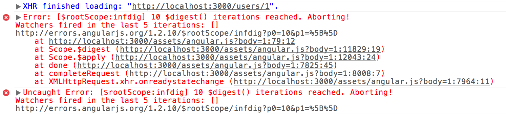

Angular 2 Tips & Tricks
Wojciech Kwiatek
wojtek.kwiatek@gmail.com
Is it ready?
 vs
vs

Not the only choice to make
There's ES5, ES6, ES7, TypeScript, AtScript, Dart...
Go with TypeScript!
But you're not forced to use types
jspm
What problems does it solve?
Great idea, but...
- way too slow
- still need a build tool
Use webpack instead
Unfortunately without hot reload yet
Web Components
Specs:
- Custom elements
- Templates
- HTML imports
- Shadow DOM
Shadow DOM
Encapsulation by default
import { Component, ViewEncapsulation } from 'angular2/core';
@Component({
selector: 'app',
template: '<div class="hero">Hello</div>',
styles: ['.hero { color: #ccc; }']
})
class App {}
.hero => .hero[_ngcontent-qyx-1]
Native by request
import { Component, ViewEncapsulation } from 'angular2/core';
@Component({
selector: 'app',
template: '<div class="hero">Hello</div>',
styles: ['.hero { color: #ccc; }'],
encapsulation: ViewEncapsulation.Native
})
class App {}
native encapsulation mode can be enabled
Is Angular component this web component?
Not yet
Change Detection
Remember digest loop?
It's gone
How does it work by default?
Component Tree

Default CD

Goal

How to achieve this?
Mutable objects are the problem
OnPush
import { Component, Input, ChangeDetectionStrategy } from 'angular2/core';
@Component({
selector: 'child-component',
template: '<span>{{ name }}</span>',
changeDetection: ChangeDetectionStrategy.OnPush
})
class ChildComponent {
@Input() name: string;
ngOnChanges({ name }) {
console.debug('name changed to:', name);
}
}
Change Detection Strategy
It works only when input changes or event is fired
Only for immutable inputs
Demo
Manual
import { Component, Input, ChangeDetectionStrategy, ChangeDetectorRef } from 'angular2/core';
@Component({
selector: 'child-component',
template: '<span>{{ name }}</span>',
changeDetection: ChangeDetectionStrategy.OnPush
})
class ChildComponent {
@Input() event: Observable<boolean>;
constructor(private cd: ChangeDetectorRef) {}
ngOnInit() {
this.event.subscribe(() => {
this.cd.markForCheck();
});
}
}
Inject ChangeDetectorRef
Mark for check when needed
RxJS
Observables are next gen Promises
They're inside
constructor(http: Http) {
http.get('songs.json')
.retry(5)
.map(res => res.json())
.subscribe(
songs => this.songs = songs,
err => console.error(err.text()),
() => console.log('completed')
);
}
subscribing to Observable is basic
but we do have more powerful operators
What more?
Another important stuff
- Angular 2 CLI
- server-side rendering: angular-universal
- redux can be used: ng2-redux
- but @ngrx/store is better
- mobile: Ionic 2
- read about testing on LiveChat blog
Wrapping up
Summary
- Angular is a complex solution
- performance is a big plus
- can be tweaked easily to be even better
- is production ready
- big team/project
Thanks!
Any questions?
wojtek.kwiatek@gmail.com